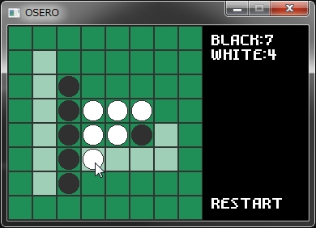

Welcome to yashihei.net
yashihei.netへようこそ！このサイトではやしへいが製作したゲームなどの公開をしてます。
作ったもの


TumblrViewer
C# WPF
プロコンでC#を多少触ったことがあったので、その経験を活かして製作しました。
TumblrAPIを叩いたり、モダンなUIな感じです。
コードビハインドを多用してるのでコードはあまり綺麗じゃないです。


オセロ
C++ DXライブラリ
C++でのゲーム制作に苦手意識を感じてたのですが、とりあえず小さなものを作っていこうと作った習作です。
この頃に他にも幾つかのミニゲームを製作しました。


てくにゃん叩き
DXライブラリ
初めて完成させたゲームです。元々弥生祭に弾幕STGを作って展示しようと思っていたのですが、時間も技術力も圧倒的に足りないことが分かり、急遽何でもいいからゲームを完成させることを目標に製作しました。